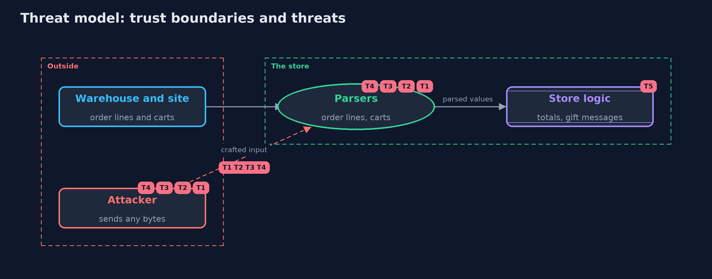

Threat Model — Fuzzing: Finding the Inputs Nobody Tested
A threat model answers four questions: what are we protecting, who or what could harm it, how, and what do we do about it. This one covers this project's own demo system, not a production deployment. Domain: an online store.
Scope
The online store's two parsers of outside input, for order import lines and for carts, and the fuzzing that tests them. It covers anyone who can send a file or a request with crafted bytes. It does not cover the business rules applied to parsed values, which are checked by other tests.
What we protect (assets)
- The store's availability: a crash or a stack overflow stops an import or a checkout.
- Order totals, which an overflow can turn negative.
- The trust that parsed values have the shape the code expects.
Who and what acts on the system
- The warehouse and the site, sending ordinary input.
- An attacker sending crafted bytes.
- The fuzzer, playing the attacker in the build.
Trust boundaries
A trust boundary is a line that data or a request crosses between parts that trust each other differently. Threats cluster where those lines are.
- Outside input to the parsers: every byte crosses it unchecked.
- Parsed values to the store's logic: only values of the right shape should cross it.

Each dashed box is a trust boundary. A rose tag such as T1 shows where the threat of that number, in the table below, applies.
Threats, using STRIDE
STRIDE is a checklist of six kinds of threat: Spoofing (S), Tampering (T), Repudiation (R), Information disclosure (I), Denial of service (D), Elevation of privilege (E).
| Id | Kind | Threat | Where it shows up | Control in this project | What is left |
|---|---|---|---|---|---|
| T1 | Denial of service | A line with missing fields crashes the import with an index error | OrderLine.parseCareless |
The fixed parser checks the number of fields, and the smallest input is a regression test | Every new field needs the same check |
| T2 | Tampering | A large quantity times a price overflows an int and gives a negative total | OrderLine.parseCareless, Money |
Range limits and Math.multiplyExact on longs; Money refuses a negative total | Other arithmetic needs the same care |
| T3 | Denial of service | Deeply nested brackets overflow the stack | CartParser.value |
A depth limit of 32 refuses the input before recursion can overflow | Limits on input size belong in front of the parser too |
| T4 | Denial of service | A gift message without a colon crashes the cart parser | CartParser.giftMessage |
The fixed parser checks the message's shape, and coverage-guided fuzzing reaches the code | Code the fuzzer never reaches is never tested, so coverage is watched |
| T5 | Tampering | A value that parses cleanly is still wrong for the business, such as a quantity of -5 | the store logic after parsing | None here: fuzzing finds crashes and broken properties, not wrong decisions | Business rules need their own tests and properties |
Assumptions
- Only a ParseException is an expected failure; any other throwable is a bug.
- The fuzzer runs with stack traces kept, so crashes are named by where they happened.
- In the demo, inputs come from fixed seeds and a seeded random number generator.
Out of scope
- Business rules for parsed values, such as a negative quantity: the race-conditions-and-business-logic project.
- Native code and memory corruption.
- Bytecode instrumentation: the -with-jazzer version.
How the tests check this
ParsersTestholds the example tests both versions pass.FuzzerTestchecks repeatability, the bugs blind and guided fuzzing find, and that the fixed parsers survive.MinimizerTestchecks that crashes shrink to inputs that crash the same way.RegressionTestkeeps the smallest crashing inputs, which the fixed parsers refuse.DemoRunsTestcompares the whole demo with the golden output.
Where this model goes next
The -with-jazzer version runs the same harnesses under Jazzer, with real bytecode instrumentation and JUnit's fuzz tests.